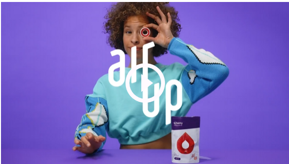

Livraison : 2-4 jours ouvrés (+1 BEL)
Livraison : Ajouter 29,00 € pour bénéficier de la livraison gratuite
Ajouter au PanierCe lot air up® contient
La révolution air up passe par l'hydratation, le goût et les couleurs ! L'édition Bleu Horizon peut faire débarquer le ciel bleu à la demande ! Avec elle, ta bouteille ne ressemble à aucune autre.
Avec la gourde air up®, boire de l’eau prend une toute nouvelle dimension. Aucune boisson n’a jamais été aussi attendue. Savoureuse, saine et écologique. Tout simplement.
Cette couleur ne te convient pas? Jettes un coup d'œil sur nos autres variantes et trouves-y ta favorite :
Détails
Matériaux du système d’shydratation air up® :
| Informations nutritionnelles | pour 100 mL |
|---|---|
| Énergie | 0 kj / 0 kcal |
| Lipides | 0 g |
| dont acides gras saturés | 0 g |
| Glucides | 0 g |
| dont sucres | 0 g |
| Protéines | 0 g |
| Sel | 0 g |
Comment ça marche
Ingrédients/valeurs nutritionelles
Ingrédients : Uniquement des extraits de fruits ou de plantes ! Oui oui, air up® c’est avant tout de la science qui stimule ton sens olfactif et non de la chimie !
Indication : Conserver à un endroit frais et sec. À utiliser uniquement dans les gourdes air up® avec de l’eau.